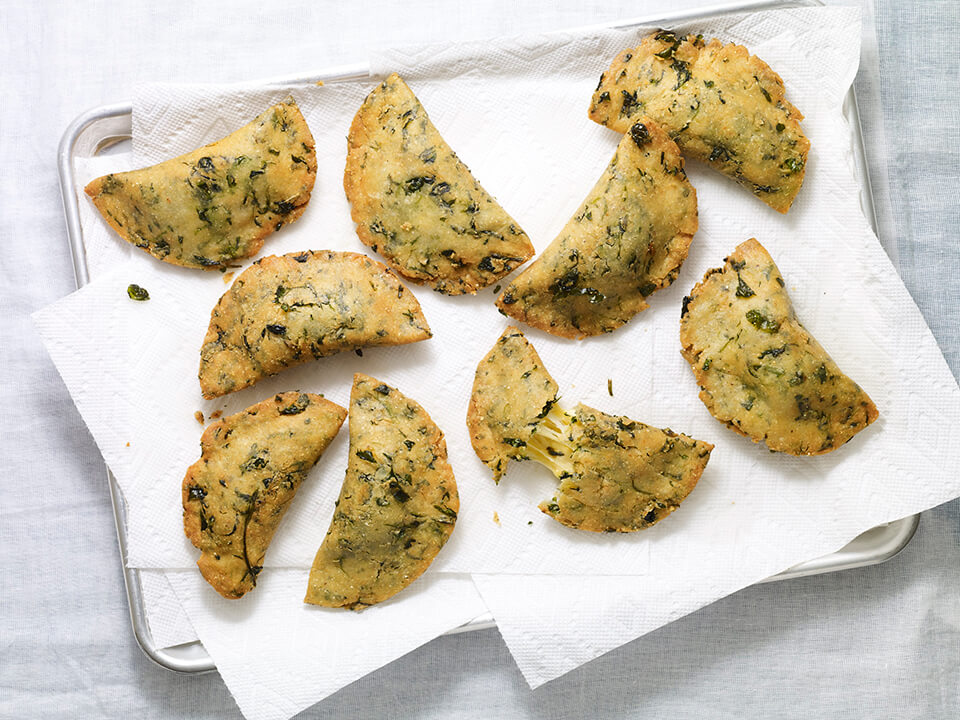
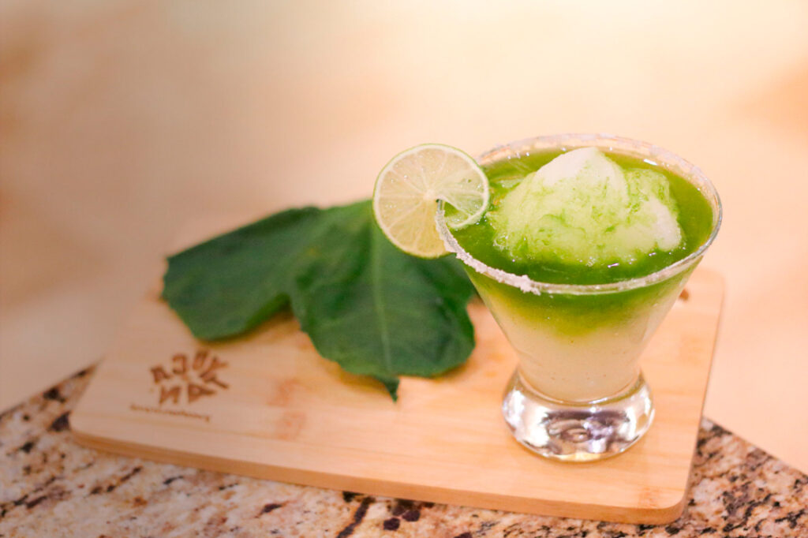
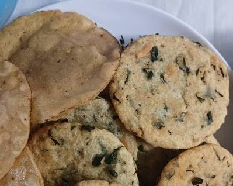

01
Origen silvestre y endémico
El xt'es es un amaranto maya que crece de forma natural en nuestra tierra. Es un recurso resistente, arraigado en la península y libre de los químicos de los cultivos comerciales masivos.
Vitasur transforma el xt'es (amaranto maya silvestre) en polvos y hojas llenos de nutrientes esenciales. Una alternativa real y económica para que los niños crezcan fuertes, sin depender de ultraprocesados costosos.

El xt'es es un amaranto maya que crece de forma natural en nuestra tierra. Es un recurso resistente, arraigado en la península y libre de los químicos de los cultivos comerciales masivos.

Aprovechamos tanto las hojas como las semillas de la planta, maximizando la presencia de nutrientes esenciales necesarios para el desarrollo infantil y la salud familiar.

Se ofrece en presentaciones de polvos de semillas y hojas seleccionadas al vacío, diseñadas para integrarse fácilmente a la rutina diaria de cualquier hogar.
A diferencia de los suplementos comerciales o verduras especializadas importadas que encarecen la canasta básica, Vitasur aprovecha un recurso silvestre local para ofrecer un costo altamente competitivo.
Aporta una alta densidad de nutrientes clave para el desarrollo físico y mental de los niños a un costo accesible para la economía familiar.
Una opción honesta y de confianza frente a los suplementos importados e industrializados que suelen salir del presupuesto diario.
Fácil de incorporar en los platillos de todos los días, apoyando el rendimiento de los jóvenes y cuidando la salud metabólica de los adultos.
Sin complicaciones: un par de cucharadas bastan para enriquecer los alimentos que su familia ya conoce.

Añada las hojas directamente a la olla o una cucharada de polvo para dar consistencia y nutrición.

Mézclelas con frijol, huevo o guisados locales tal como lo haría con cualquier verdura de hoja.

Incorpore el polvo de semillas en licuados o aguas de temporada para una bebida nutritiva y atractiva.

Sustituya una parte de la harina convencional al preparar tortillas, pan o galletas caseras.
Conversamos de cerca con padres y tutores en nuestras jornadas de validación de campo en la región. (Hicimos 8 entrevistas)
Datos respaldados por las entrevistas de validación de proyectos ODS en Yucatán.
Escríbanos para conocer más sobre Vitasur, resolver sus dudas sobre presentaciones y descubrir cómo adquirirlo de manera directa.
Escribir por WhatsApp